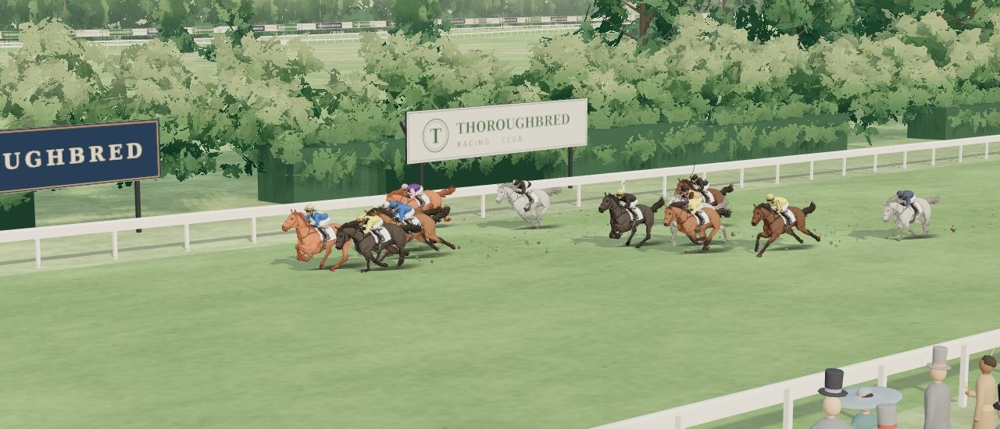

Sandown Park in 3D, right-handed, on its real outline (OpenStreetMap) and real ground (AWS Terrain Tiles): the stiff climb of about 13 m up the last half-mile to the stands, and the sprint course running uphill across the middle to its own winning post. The two main grandstands modelled from your photos: the main stand with its deep ribbed roof, the fins on top and the row of white peaked tents along its back, and the Eclipse stand beside it. A full festival between the run-in and the sprint course, the bushes along the sprint's far side, and the TV cut from your two Racing TV videos.

The real track. OpenStreetMap's outline of the turf (the west bend's sharp corner rounded by hand), the starts where At The Races' diagram puts them, and the ground under every route for the race engine: the round course climbs about 13 m in the last half-mile, the sprint course about 9 m.
The sprint course. The 5f starts in the chute in the far bend and runs diagonally across the middle to its own post at the west end, with its own finishing line, finish camera, head-on and replay.
The stands. The main stand and the Eclipse stand, modelled new from your photos; the tents along the main stand's back show their peaks above the roof. Trees on the hill behind, as in your photos.
The festival. The whole ground between the run-in and the sprint course: the half along the run-in faces the stands (marquees, big tops, rows of balloons, its rail crowd stood back so the infield car runs clear), the half along the sprint faces the sprint (little stands, decks, marquees, a crowd on its rail). Trodden ground round each piece, lawn between.
The far side of the sprint. A band of bushes along its whole length: dark hedges in runs with clumps between, three rows of bushes behind, a loose row of trees; boards on its far rail at the finish.
The cameras. From your two Racing TV videos. Round races: head-on down the home straight from the west bend, the infield car alongside with the stand side behind, high across the west bend, the infield car down the back straight over the golf course, head-on behind the chase fences, head-on round the far bend, the infield car up the run-in, then the finish square on from the infield with the stands behind. The sprint: one car alongside on the festival side looking across at the bushes, then its finish from the near rail.